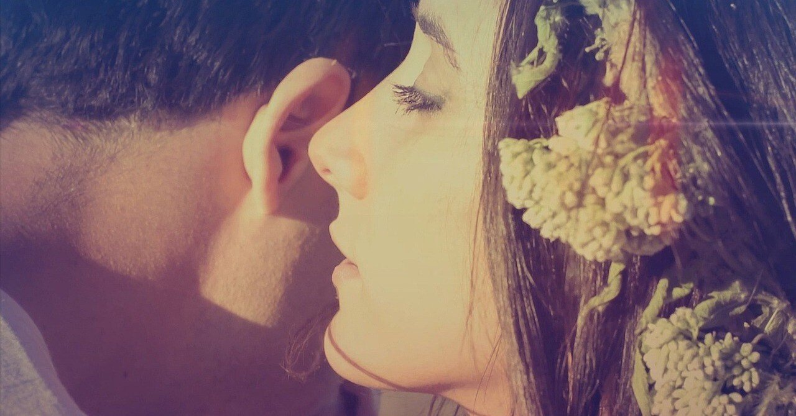

1/1
始まりはふとしたきっかけだった。神は毎日退屈なものだから宇宙を創造した。そのうち生命が誕生すると神は我が子のように温かく見守った。生命たちはすくすく育ち、やがて知能を得、言葉や文化を形成した。「もう立派な大人なのに手がかかるの」神はそうぼやきながら今日も僕らを見守ってくれている。
1/2
空を飛んでる。羽を広げ身体をしならせ街を見下ろす。心優しい人や悪さをしてる人、強欲な政治家や健気なあの子も小さく見える。空を飛んでるなんて知らないだろう。目を瞑り現実から離れ空想に浸る。それは言葉となり物語になる。目を開けると羽は消えていた。何かを表現する時だけ僕は羽ばたける。
1/3
「世界で一番大切なものを失したみたい」「何を？」「温かくて儚いもの」「漠然過ぎて分からないよ」「君も持ってたじゃないか」「知らない」「よく思い出してごらんよ」「そう言われても」「例えばアルバム。例えば手紙。例えば君の記憶の中」「……もしかして」「僕はあの頃から何も変わってないよ」
1/4
人混みですれ違う人間1人ひとりに人生がある。忙しそうに見えるサラリーマンや仲良さげに話すOLたち、母親に手をひかれてる男の子や見知らぬ土地を来訪中の外国人。僕らは話すことなく、それぞれ前を向いて道を歩む。言葉がなくても分かる。同じ空の下、出会うことすらなくても僕らはきっと友達だ。
1/5
普段はそっけない君の両親も、縁側に佇む老夫婦もかつては愛を温め合っていたのさ。分かるだろ？ 今、僕らの愛は彼らと同じように何処かの引出しにしまわれている。そうするには僕らはやっぱり若すぎる。まだ君と確かめておきたいんだ。歳をとって熟れていっても僕らの愛だけは若々しくありたいから。
1/6
「見えないものに目を凝らせ」祖父の口癖だった。「現実を見ないってこと？」「違う。いずれ分かるよ」祖父は僕の分かる形で死んだ。数年経ち、あの言葉の意味が少し分かった気がした。感情も周りの人もいずれ何処かにいなくなってしまう。だから目を離しちゃいけない。心の琴線に触れた人々のことを。
1/7
0か100か。善か悪か。真実か虚偽か。ついどちらかに決めたがる。その方が分かりやすいし、単純だからだ。しかし僕らはその狭間で考える権利がある。一旦は問題を保留したっていい。最初はどっちつかずでもいい。結局はどちらかに決めなくてもいい。それを考えること自体があなたの存在意義なんだ。
1/8
夢と現実を行き来する日々。大好きな君はどっちに住んでいるんだっけ？ つらい夢を見た時は楽しい現実を願う。都合よくはいかないけど、精一杯生きてる。生きようとする。だけど君がいなくなったらどうだろう。君にも精一杯生きてほしい。たとえ、この世界からいなくなっても夢の中でまた会えれば。
1/9
しもやけができるほどの寒さ。みんな白い息を吐いている。ランナーの小刻みな吐息に主婦のため息。ある人は言った。「息には魂が宿る」そんな迷信を信用してなかった。でもある時、僕のかじかんだ手に君はそっと息を吹きかけた。暖かさがいつまでも残っているような感覚。「伝わった？ 私の気持ち」
1/10
その心を忘れないでくれ。困っている人に手を差し出す優しさを。世界はお構いなしに動き続けるけど、立ち止まって誰かを守る勇気を。「あいつは自分の見映えをよくしたいからやってるだけ。偽善だ」そう言う人もいるかもしれない。だけど自分だけは信じてあげて。君だけは君のままでいてほしいから。
1/11
ラーメン屋に行く。いらっしゃいの声に迎えられ食券を渡す。やがてほくほくの湯気を放つラーメンが現れた。我が物顔で居座る味玉と黒光りする海苔。その下に潜む秘宝のような麺。箸を麺にくぐらせ口に運ぶ。ずるずると音を立て体内に取り込まれる。それだけのことなのに、その瞬間は世界一の幸せ者だ。
1/12
綺麗事は嫌いだ。事実を包み隠さず伝えよう。だからといって勝手に傷つくのはよしてくれよ。口にせずとも分かる。心の準備はできたか。おいおい、余計顔が険しくなってるぞ。もう少し待ってやる。でも早くしてくれよ。意外と忙しい身なんでね。よし、緊張が解けてきたな。ではいくぞ。僕は君のことがs
1/13
「サンタさんって本当にいるの？」クリスマスに娘は聞いてきた。「いるよ」そう言っても表情は曇っている。もうそんな年か。なんだか感傷的な気持ちになる。翌朝。プレゼントを握りしめ娘は言う。「大人になってもサンタさんを信じていたいな」成長した眼差しに僕はサンタとして涙をこぼしそうになる。
1/14
「人生はグリーンにのってからが本番さ」紳士は言う。「若い時はがむしゃらに。でもバンカーやOBを経験してく内にそれじゃ駄目と気づく。坂の傾斜、風向き、色んな存在を考慮しなきゃいけないんだ」なるほどと相づちを打つ僕に紳士は最後に言った。「この出会いがホールインワンになることを願うよ」
1/15
君専用のリモコンがあればいいのに。暇な時はすぐ駆けつけてくれて、落ち込んでる時には励ましてくれる。都合のいい風に聞こえるけど、それ位私には君が必要なの。だけどたまにはリモコンの電池を替えなきゃいけない時も。でも安心して。替えは沢山買ってあるから。だから君は私のものにだけなって。
1/16
何でも「なんで？」と聞く子がいた。「なんで空は青いの？」「なんで人類は誕生したの？」周りの大人は優しく教えてくれた。ある日その子は大事な友達を亡くした。「なんで死んじゃったの？」棺桶の友達は教えてくれなかった。本当は理由など知りたくない。でもこう言うしかなかった。「なんで……」
1/17
「選挙の投票先どうしよう」そんな僕の耳に選挙カーの放送が。「我々は辛党です。冗談ではありません。現政策は甘いものばかり！これを正します」辛党は政権を取るが完璧主義なため国民は疲弊していった。数年後。「我々は甘党です。余裕ある社会を目指します！」僕は選挙のたび食べ物の嗜好が変わる。
1/18
夜行列車に揺られ、私は懐かしい故郷へ赴く。登下校で歩いた畦道、好きだった子の家の前、ぽかんと浮かぶ丸い月。何でもなかった光景が遠い昔の記憶を蘇らせる。みんな元気かな。誰もいない道の途中でふと涙がこぼれた。心の凝りが水に流されていく。すると、私はようやく軽くなり天に昇り始めた。
1/19
物書きで、絵描きで、歌手でよかった。みんな作り手としての喜びを噛み締めながら各々の方法で思いを表現する。その先には思いを受け取り育てる受け手がいる。「あなたの作品に出会えてよかった」そう思ってもらえる命の種をこれからも世界中に蒔いていきたい。ただそれだけを願って今日もひたすらに。
1/20
いつも夢うつつな君の目は、誰よりも純粋に世界の真実を見つめていた。母親の温もりを求め好奇心に従い生きている、その小さな手を決して離しはしないから。だから大人になってもその瞳を忘れずに、君もいつか誰かの親になっておくれよ。そうやって君の血は未来に受け継がれ世界は回っていくのだから。
1/21
俺は反逆者。朝に逆らうように眠り、夜に逆らうように仕事をする。誰にも媚びず何もかも支配する。信頼？ 友情？ 愛？ そんなのは下らない……そう思ってた。でも、なぜか時折恋しくなる。人間はなんて面倒なんだろう。いっそ感情など何処かに捨て去りたいのに、君だけはずっと守ってあげたいんだ。
1/22
ラジオから流れる古めかしい歌を聴いて君のことを思い出した。もうどれ位前になるだろう。君の顔をおぼろげながらも思い浮かべる。僕らは若かった。遠慮などせずお互いの気持ちをぶつけ合った。大人になるなんて今思えばゆっくりで良かった。もうあの頃に戻れなくても思い出の歌さえあればそれでいい。
1/23
星が降ってくるなんて誰もがフィクションだと思ってた。幻想的で神秘的な瞬間。でも実際は甚大な被害をもたらし多くの命を奪った。「現実は非情ね」君はそう言って涙を流す。僕は無理して笑って見せる。家族も友人も亡くしたのに、なんで君は生き残ったのか。「一番大切な人だけ死なないなんて非情よ」
1/24
風邪を引いた。ノドは腫れ熱は出て頭は痛い。赤ゲージの体力で次から次へと仕事をこなしていく。「お大事に」社交辞令を淡々と受け流し帰路につく。「今日くらい休みなさいよ！ 布団敷いてあるから」１日頑張って良かったと思いながら、少し厳しい言葉だけが体にしみわたる。君の怒る顔とともに。
1/25
まだ若いのに、電車でおばあさんから席を譲られた。バスに乗り換えても妊婦から「どうぞ」と言われる。友人は「みんな気にかけてるんだよ」と分析する。「なんで僕なんかを……」そう言った傍でTVニュースが流れた。「今日も多くの若者が自殺した模様です。皆さん若者には優しくしてあげてください」
1/26
「小瓶に手紙を入れて海に投げたら、誰かが読んでくれるかな？」入院中の君が突然そんなことを言った。「僕ならここにいるよ」「私が遠くにいっちゃうから」淋しい瞳が揺れる。「離れたくない」そんな言葉だけが宙に浮いたまま君は世界から消えた。いつかの手紙は海を渡っても必ず手元に届くと信じて。
1/27
時間が足りない。あれもこれもやんなきゃ。ああ、あっという間に1日が終わっちゃった……もう朝か。顔を洗っている暇もない。ダッシュで外に出る準備は整った。さあ行くぞと思ったら愛犬との散歩を忘れてた。これだけは欠かせない。今日もゆっくり1歩ずつ。あれ？ 何であんなに急いでいたんだろう。
1/28
「私の未来を預けると言ったら、どうする？」私たちはもう5年も付き合っていた。彼は慎重で結婚には及び腰だった。でも私からプロポーズするわけには。こういうのは男からだもの。しかし、もう待てない。彼は微笑みながら「とりあえずロッカーに。いつか君にお似合いな人が取りにくることを願って」
1/29
「こちらは命の電話です。どうなさいましたか？」自殺を未然に防ぐために設置された命のコールセンター。しかし、そのスタッフだけでは手に追えないほど電話は鳴り続けた。その対策として取られたのは……。444-4444「こちらは命の電話です。天国と地獄、どちらのスタッフと話がしたいですか？」
1/30
「分かった風に言うなよ」私は君を怒らせてばかり。確かに君の全てなんか分かりゃしない。でも少し位なら。「人間なんて分かり合えるわけないんだ」君はますます殻に閉じ込める。心から君を愛してるのに。一緒に世界を見て回りたいのに。たとえ分かり合えなくても、互いを尊重し合えているこの世界を。
1/31
「探し物はこちらですか？」夢の中で誰かが僕に差し出す。「これは？」「あなたがかつて大切にしてたものですよ」旧友との友情、初恋相手との恋路、担任の先生との想い出。「懐かしいな」思わず言葉が出た。今頃何してるんだろう。久々に連絡でもしてみるか。心の中の探し物はようやく見つかったって。